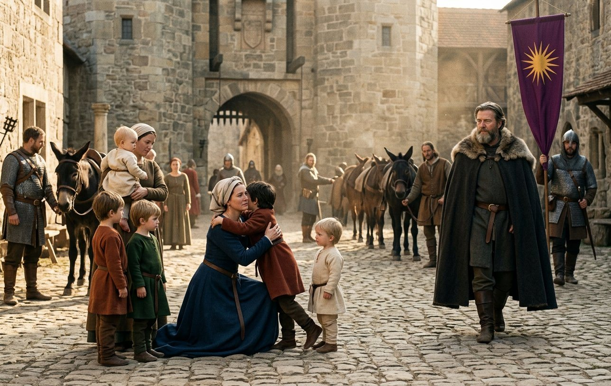
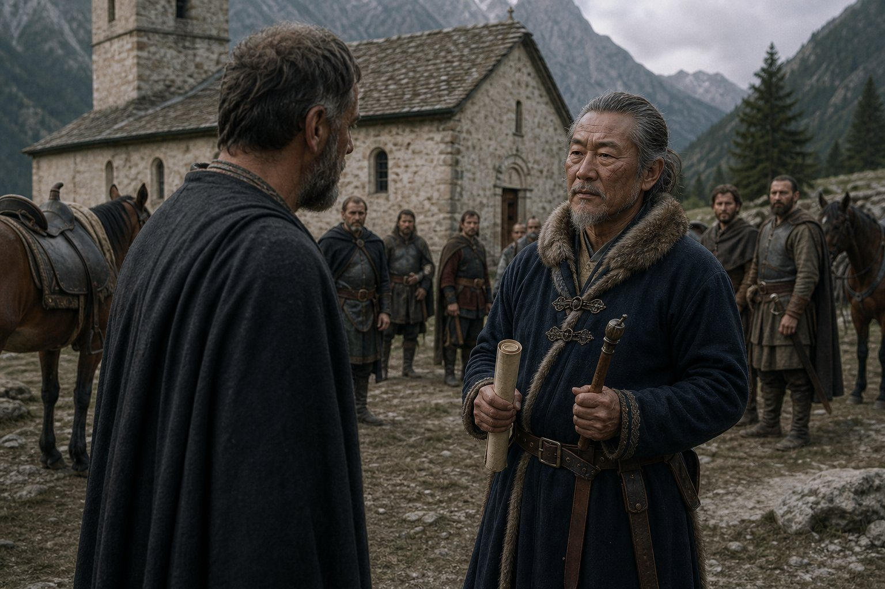
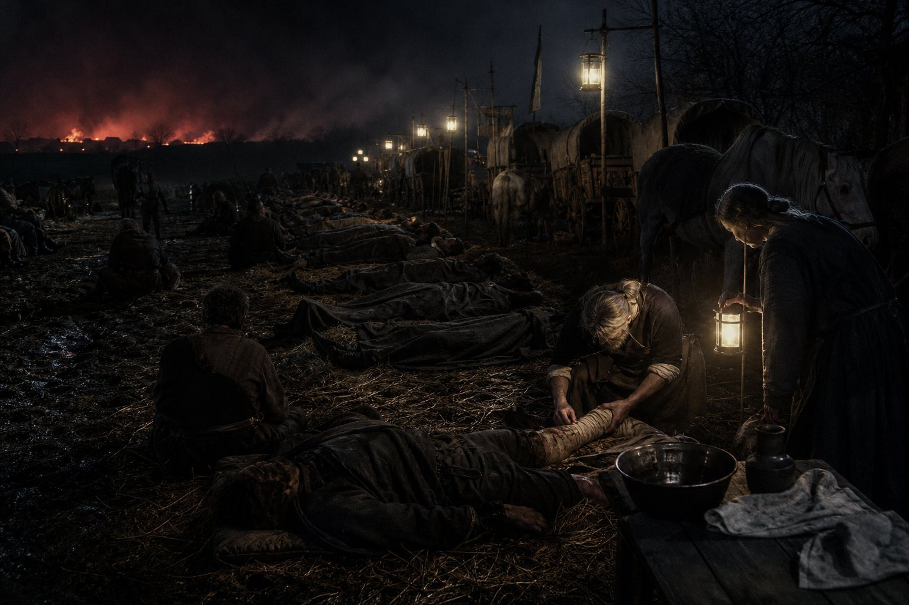
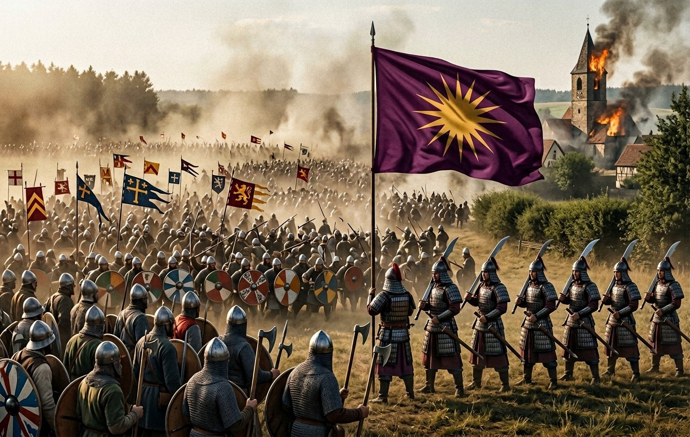
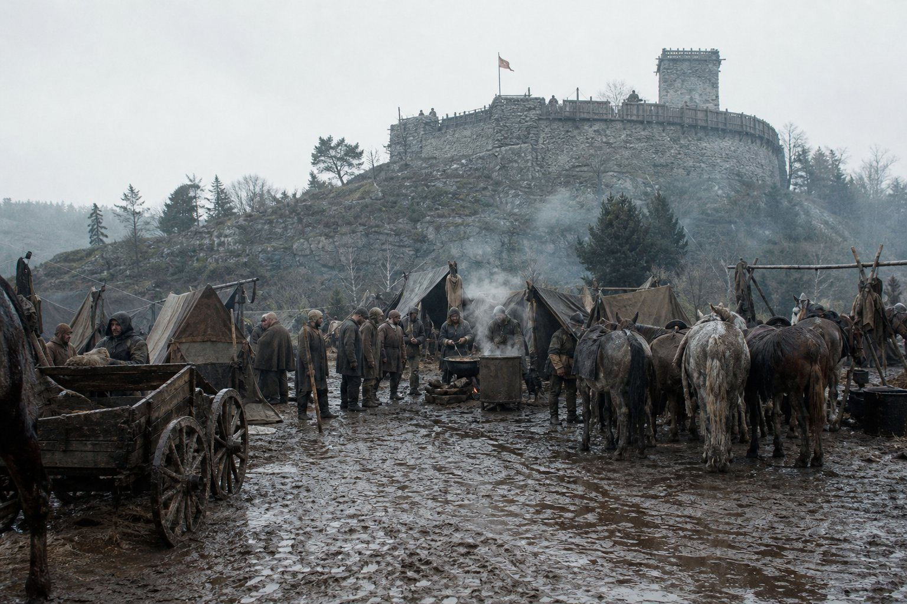
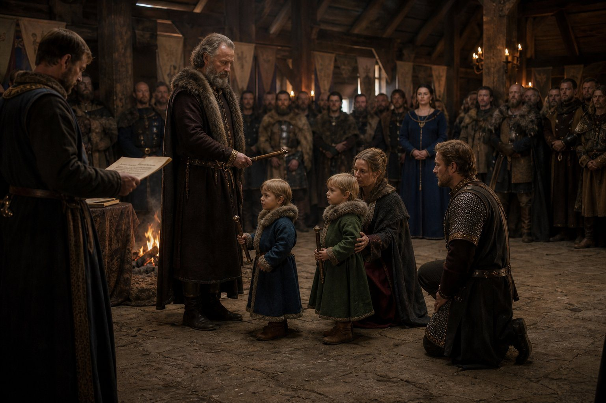
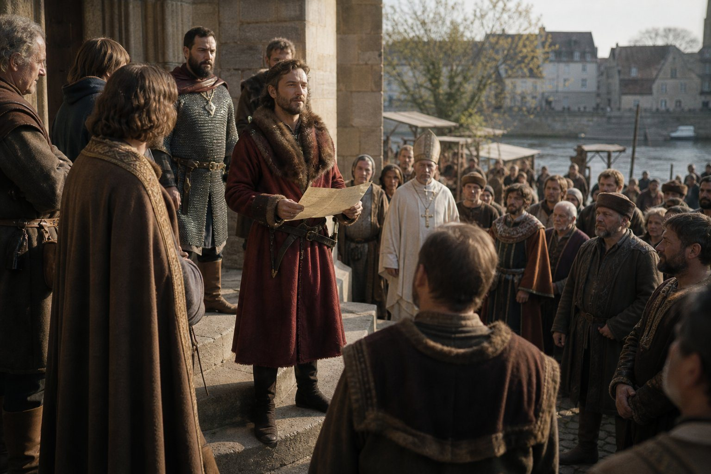
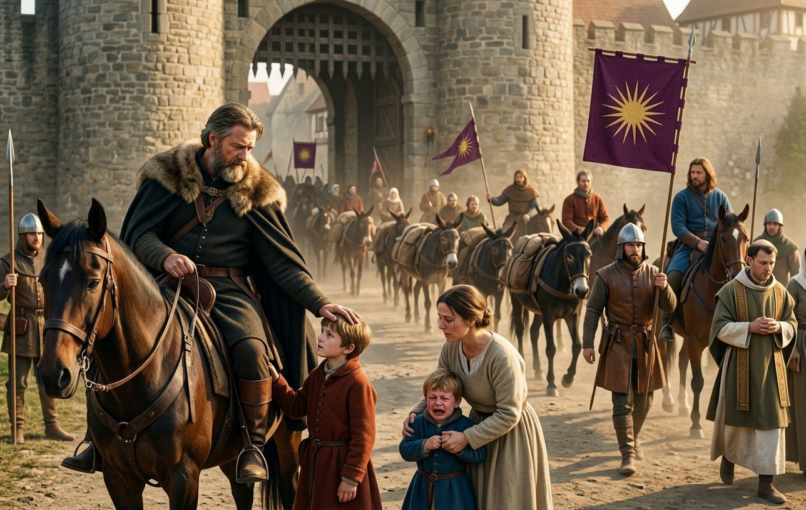

Regensburg, the sixth month of 909
We came into Regensburg in the sixth month of 909 and the first thing that happened was that a boy of seven broke ranks.
That is not a figure of speech either. The column came down the last mile in order, because the King likes a column in order, and there was a household on the road outside the gate — the Queen, the three boys, the nurses, the grooms, forty people — and Antiphates, who had been riding at the back with Mudra and the mules, came up the whole length of the column at a trot, past the wagons, past the soldiers, past his father, and was off the mule before it had stopped and into his mother's arms, and the column stopped and nobody said anything about it.
The King did not stop. He came down the last hundred paces at the same walk he had come the last eight hundred miles, and when he reached the gate he took his wife by the shoulders, and looked at her, and said something in her ear that I did not hear.
In the eighteen years I have kept this book I have written about eleven battles, three coronations, one wedding and a great many deaths, and I have never once been able to write a homecoming, and I am not going to learn now. What I will give instead is the count, which is my trade.
In the sixth month of 909 the King's household at Regensburg held: a queen of thirty-six. Antiphates, seven, who had been to Rome. Timostrate, four and a half, who had not seen his father since he was three. Chairestratos, three, who did not know him at all. Lysistratos, two, the same. Euthykrates, one year and five months, born in a capital, who had been held up at a window by a queen to watch a column come in.

And Martina, who had come up the road with us and was in a room in the town by the third day.
I am putting those numbers in this chapter because this chapter is about what a kingdom is made of, and the reader should see the two halves of it side by side: the hall at Regensburg with five sons in it and a woman who was not the queen in a room three streets away.
Raina knew before I did. I am certain of it and I have nothing to prove it with. She had a queen's household and a queen's servants and in nine months alone in a capital with a war on it she had learned everything a queen learns, and the first thing she said to me, at the gate, was: how is he.
And I said: tired, and she said: no, and looked at me until I understood, and then I said: he is the same, and she said: good, and that was the whole conversation and it is the only one I have ever had with her that I would not write down for a chronicle.
The kingdom in his absence
Now the thing that I promised in the last chapter, which is the account of what a kingdom is when you look under the pillars.
It had run for nine months without him. That is the first fact and it is not a small one: a kingdom of that size has courts, tolls, mills, markets, bishops, a mint, quarrels over pasture and quarrels over a body in a field, and it had done all of it for nine months with the king on a road in Italy, and it had done it badly and it had done it.
Pramda had run the household from the road, out of a satchel, and she had done it by writing letters that took eleven days each, and the letters she got back she answered before she had read the next one.
But a household is not a kingdom. When the King came home he had in front of him the four things a realm is actually made of, and I am going to name them because I have watched eleven of them and this one was worse than most.
First, the bishops. Bavaria's own church, which had sat in his coronation hall and been impressed, and which had risen once in the fifth month of 908 under a man of twenty-seven, and which had been beaten in a field in a day and not changed by it. He had a prisoner in a room with a guard at the door whose name was Lothar and who had told the country that the king's god was an error, and who was still, from that room, telling it.
Second, the counties he had taken from the Franks. Frankish lords, Latin priests, German-speaking villages, and a Greek king eight hundred miles from anywhere they had ever heard of, whose writ ran as far as the next armed man and no further.
Third, the marches. The south and the east, where the country is Slav and the lords are Slav and they had been Bavarian for less than a lifetime and knew exactly how much that was worth.
Fourth, and this is the one nobody writes in a chronicle, the roads. There were not enough men in the kingdom to hold the roads, and every toll that was not collected was a lord in a valley deciding for himself what he was.
Those are the four pillars. I have stood under the dome of the great church at Constantinople and I have seen what a state looks like when it has been at it for six hundred years, and what my King had instead was four pillars and a great deal of sky.
Pitten
On the twentieth day of the seventh month of 909 the King made Shiina the Noble Count of Pitten, and on the first day of the eighth month Shiina left the company.
I have been putting this paragraph off for a chapter and a half. I am going to write it now and I am going to do it properly, because Shiina is the second of us to go and the first to go up.
Shiina came out of the north with us in 879. He was born in 845, in the far islands of the eastern sea, of a people this book has called Emishi since its second chapter, and he was twenty-two years old when the wreck put him on the coast of a country that had never heard of him, and he was the vainest man in this company from the first month and he was right to be.
He was handsome and he knew it, and he talked to everybody and was at his ease everywhere, and he was the best man with mules and horses this company ever had, and he had a scar across his face from a knife at nineteen years old in a town in the Danube country when he was holding the mules, and he wore it like a decoration.
He was sixty-four years old on the twentieth day of the seventh month of 909. He had been in this company thirty years. He had been in eleven countries and had learned the words for horse, money, wine and no in most of them, and he could not read.
The ceremony was in the church at Pitten and it was short. The King gave him the county in the way a king gives a county: a charter, a rod, and a sentence in Latin that a clerk read out and that Shiina did not understand, and which the King, who did understand it, translated for him afterwards in the yard, out loud, in front of the household.
That is the part I want in the book. A king translating a Latin charter into a market Greek for an Emishi horseman in a churchyard in the mountains, and the horseman listening with his hands behind his back the way the King stands, because he had been copying that for thirty years.
Then the King said the thing he says, which I have heard at five graves and never at a gift: *say the name*. And the household said Shiina, and Shiina said his own name too, because he was sixty-four and vain and had always liked the sound of it, and everybody laughed, and the King did not, quite.
He left the company on the first day of the eighth month of 909 with thirty-one years of service and one county and no wife and no children that the record gives him, and a house in the mountains, and a good horse, and the only thing in the world that he had ever asked for.

I asked him, in the yard, what he was going to do. He said: count. And then he said: do you know what the first thing is, when you have a county.
I said no.
He said: nobody tells you what to do.
That is the best sentence anybody in this book has said about power, and it was said by a man who could not read, in a churchyard, and I have not been able to improve on it in a year.
Karl of the Franks
The war with East Francia was declared on the seventh day of the sixth month of 909, which is the same week we came home, and I want the reader to notice that: the King came off a pilgrim road and into a war inside a fortnight.
The enemy is Karl, King of the East Franks, and this book has met him before: at Leuchtenburg in the fourth month of 905, where one thousand seven hundred and seventy-four of ours stood against one thousand nine hundred and seventy-seven of his, and lost forty men and killed one thousand and eighty-eight of his, and it is not a battle any chronicle remembers.
I want to say something about Karl, because he is going to be in this book for ten years and because I have never once seen him.
He is a king of the Frankish country to the east of us, which is a country of bishops and forests and a great many men who can fight, and he does not want Bavaria. That is the thing the reader must take from this chapter. He wants the margins: the county at the edge, the toll on the river, the abbey that owes him and not the Greek.
Every war in this book before 906 was a contract with somebody else's name in the claim. This one has no claim and no contract and no fee, and it is the first war in the book in which the company fights for the thing it has become.
The King called the muster at Regensburg in the seventh month and the company came in, which is a sentence that takes one line and cost three weeks.
The march north
The muster at Regensburg filled the town in the seventh month and we went north in the last week of it, and I am going to give the road three paragraphs because it is the only campaign in this book that is fought in a country with trees.
Franconia is a country of forests and small stone churches and a great many villages that are three miles apart and have a mill and a quarrel. It is richer than the Danube country and poorer than Lombardy and it is the sort of country in which an army cannot live off the land for long without eating the people who live on it, and we ate them.
That is in the book now and I have been avoiding it for four chapters. A company of three thousand men on a road eats eleven tons of bread a week. It is not a metaphor and it is not a crime; it is a number, and the number has to come from somewhere, and the somewhere is a village with a mill, and the village with a mill remembers. The King paid for what could be paid for and the quartermasters took what could not, and every county we went through in that August is a county that will be a problem in ten years.
The column was, that summer, the strangest thing in Germany, and I have written this sentence in this book before and will write it once more because it is the truth and it is the whole of what this company is. In one line on the road to Lichtenfels there were: Bavarians, who are the country’s own and have been since 906; Franks, taken into the company out of the wars and fighting their own cousins; Greeks from the islands and Greeks from the far country; Slavs from the marches; eight Chinese swordsmen under a man called Zhen who had come to us in the east in the nineties and who spoke no language that anybody in that column could argue with; and one Emishi who had left the company three weeks before to be a count in the mountains.
And over all of it, one standard. Sixteen straight rays of gold on purple, which means nothing, which has never meant anything, which was cut off a Macedonian tomb because a boy of sixteen liked it in 866.
The sun in the line
I want to say what that standard did at Lichtenfels, because the King’s form for this kind of war is the standard and I have watched it work for three years without writing it down.
Karl’s army had banners. Every lord in it had a cross or a beast or a chevron and behind them the bishops’ crosses, and a man in a Frankish line can read his own lord’s banner in the dust from four hundred paces and that is the whole of what a banner is for.
Our line could read one thing. The sun. There is no lion, no tower, no motto on it, and no man in that line could tell you what it meant, and by the eighth month of 909 it was the only object in the world that every one of the three thousand had agreed on.
I have heard the King called a foreigner in eleven countries and I have heard the Bavarian bishops call his god an error, and I have stood at the back of a field in Franconia and watched a line of Bavarians and Chinese and Slavs and Franks dress their ranks on a purple cloth with a gold sun on it, and I will tell the reader what I think about that and then leave it alone: a standard is not a faith and it is not a country. It is a thing men can see. That is all it has ever been and it is more than most kings have got.
Lichtenfels, the second day of the eighth month of 909
At Lichtenfels on the second day of the eighth month of 909 there were three thousand and eighty-two of ours against two thousand five hundred and six of Karl's.
I will give the numbers before the account because the numbers are the account.
We lost three hundred and twelve men. They lost one thousand two hundred and twenty-one. We won the field.
Three hundred and twelve. I have written every count of this book in my own hand and I want the reader to sit with that number for a moment, because the last time a company of ours lost three hundred men in a single day was at Turnu in 894 and that was ten. That is not a mistake and it is not a figure of speech: at Turnu we lost ten men, and at Lichtenfels we lost three hundred and twelve, and both of those numbers are in the same record kept by the same hand.
What that means, in the only language I have: the company is not fighting companies any more. It is fighting kingdoms, and a kingdom can put two thousand five hundred men into a field and lose them and be there again next spring, and a company of three thousand cannot lose three hundred and be the same company.
I was not in the line. I was in the baggage, which at a battle means the wagons, the horses, the spare mail and the wounded, and I want to be honest about that because there is a fashion in this book for the narrator to have been in the middle of everything.
From the baggage you do not see a battle. You hear it and you get it afterwards. What I saw was the field from a low rise at the back with the wagons, and what I could see was the banners and the dust moving, and twice I saw a piece of the line come back and then go forward again, and I could not tell you which piece.
What I can tell you is what came to the wagons. Three hundred and twelve men, and a great many of them alive, and the ones who came to me came with the things that come off a man in a battle: the leg, the arm, the face, the belly, and the ones who came walking with a hand over a wound they would not open, and the ones who came and sat down and did not get up.
I worked for eleven hours. I was fifty years old and I worked for eleven hours and I have never been so tired, and in the middle of it I understood something about my King that I have been trying to put in this book for three chapters and will now say plainly: he wins his battles in the first four hours and then the rest of it is mine.
The King commanded at Lichtenfels and won it. That is the record and there is nothing to add to it. What I add is that the field was ours by the late afternoon and the wounded were not finished with until the second morning, and that between those two facts there is a room with a lamp in it and me, and I have been in that room after every battle in this book.

Two hours in, the line came back.
That is the sentence I have been trying to get to and it is the whole of the day. I was on the rise with the wagons and what I saw was our left come back out of the dust three hundred paces and then stop, and stop in the way a line stops when the men in it have decided not to go further, and I watched a thing I have seen twice in thirty years, which is a company looking at a thing it cannot do.
The Bavarian foot were on the left. They had come north to fight for a Greek king whose god their bishops called an error, and they had done it for three years, and in the eighth month of 909 in a field in Franconia they found the limit of that, and I do not know what the limit was, and every man who came back to the wagons had a different sentence for it.
What stopped it was not a speech. The King went to the left with his own household and the standard, and the Zhanmadao came across the front of the Bavarians at a run, eight Chinese swordsmen in a country none of them had ever heard of, and made their wall with their long swords in both hands.
They held it for the length of time it takes eight men to hold a line that three thousand men are watching. Then the Bavarians came back into the front and by the late afternoon the field was ours.

I have written about the Zhanmadao at Hohenburg in the last chapter of the third volume and the reader may think I am repeating myself. I am not repeating myself. This company has now twice been saved in a German field by eight Chinese swordsmen, in Bavaria in the sixth month of 908 and in Franconia in the eighth month of 909, and if a chronicle of Bavaria is ever written there will be no sentence in it about either.
The three hundred and twelve
I made the roll of the dead myself, over four days, because the paymaster's clerk had a fever and because I would not let a clerk who had never been in a line do it.
A roll of the dead is not a list of names in this company. It is a list of names with four columns: who, of where, since when, and what is owed. And the fourth column is the reason I do it, because a man who has been in the company nine years has money in the chest that belongs to a woman and two children in a town eleven hundred miles east, and somebody has to find out where they are.
Of the three hundred and twelve: thirty-one had been with us more than ten years. Nine were men who came out of the north with the company in the first years, though not one of the roll of 879 itself, because there are only five of those left and I know all five by name. Two hundred and four had joined since Vidin. Sixty-eight had joined since the coronation.
And here is the arithmetic that I have not been able to get out of my head since: of the three hundred and twelve, one hundred and nine were Bavarian.
Bavarians. The country's own men, in the company, standing in a line in Franconia against Franks, and dying for a Greek king whose god their bishops had told them was an error. One hundred and nine of them.
I said in the last chapter that the kingdom is four pillars and a great deal of sky, and that a kingdom is not a country. Lichtenfels is the other half of that sentence and I owe it to the reader: there is a thing that happens in a line which has nothing to do with bishops, and a hundred and nine Bavarians died in it this summer, and I do not know what to call that and neither does the King, and we have both stopped trying.
Helfenstein and Schelklingen
On the first day of the second month of 910 we took Helfenstein and Schelklingen, and the record gives them as two entries on one day and no numbers, and I am not going to invent any.
It was February and it was cold and it was a siege and a storm of a place, twice, and the only thing I have to say about it that is worth the reader's time is about the weather.
Sieges in February are not battles. A battle is a day and a siege is a season, and a season in a cold country is a great deal of standing about with wet feet while three hundred men in a fort decide how long they can hold out on hope.
We were eleven days at Helfenstein. The thaw came on the ninth day and turned the ground under the camp into something that was neither ice nor mud, and the men got the flux, and I lost four men at Helfenstein who never saw an enemy, which is the third way a company dies and the one nobody writes down.

They came out on the eleventh day. Schelklingen was three days after and came out on the second day, and the King did not put a garrison in either, because he had learned in Bavaria that a garrison is a company of his own men sitting in a town being hated, and what he did instead was the thing he always does: he took the homage, he left the men who were already there, and he rode away.
That is the whole of the conquest of the Frankish country in eight words: homage, and the men who were already there. It is not a poem. It is why it will all have to be done again in ten years, and why the King's realm on a map in the year of grace 922 is the same size as it was in 909 and is not the same country at all.
The duchies, the twenty-fourth day of the fourth month of 910
On the twenty-fourth day of the fourth month of 910, at Regensburg, the King created three duchies and gave them away, and this is the section this chapter exists for.
He created the Tyrol, and the Krain, and the Steyermark. He gave the Tyrol to Athanasios, who joined this company at Vidin in 887 as a boy with a bad chest and a good hand and who had led the pledges of Bavaria in the hall three years before, and who was by then a man of about thirty and a soldier.
He gave the Krain to Chairestratos, who was four years old.
He gave the Steyermark to Lysistratos, who was three.

Two of those are his sons and one of them is his second son and one is his fourth, and I want the reader to have the ages twice, because they are the whole of it: four and three.
He gave a duchy to a boy who can count to four and a duchy to a boy who can count to three, and he did it in a hall, in public, with a charter and a rod and a clerk reading Latin, and every lord in Bavaria watched him do it and understood the message, which was not about the boys.
I will spell out the message because the room did and nobody had to be told. The duchies were new and they were his to give, and he had given them to his blood, and a lord in that hall who was thinking about the next rising was being told, in a language a lord understands, that the King intends to be a dynasty and not a king.
What it costs to do that, I also know, because I saw the other side of it. A duchy with a four-year-old in it is a duchy run by whoever holds the child, and every one of those three is a house with a council of men in it who will be governing the King's lands in fifteen years and who had already begun, that afternoon, to think about the boy's marriage.
The four-year-old was at Regensburg and had a nurse and a wooden horse and was brought in at the end of the ceremony to be shown, and he was frightened of the hall, and his mother, who was the Queen's woman and had been in this book since 906, stood at the back with her hands folded and did not smile.
The three-year-old was not there. He was in the house at Linz with his own household and he was told about it later, and I hope whoever told him made it sound like a present.
The hall of children
I wrote the last section and then sat looking at it for a while, and this is what I have to add to it and it is the reason this chapter has the shape it has.
The King made five duchies and counties out of the countries he conquered in three years and he gave four of them to his sons, and his sons are five, and the eldest of them is seven, and the sum of all their ages is seventeen years.
Seventeen years of sons holding a third of the German country.
I am the physician of this company and I have delivered some of them and I have been at the bedside of all five, and I will tell the reader what I actually think, marked as mine: a man of sixty who has spent thirty years fighting for other men's claims has decided, in the last three years, to fight for a family instead, and he is doing it with the only tool he has ever had, which is a title, and he is doing it at a speed which suggests he knows how much time there is.
He was sixty in the second month of this year. I put that in a paragraph of its own because it is a fact and because nobody in that hall said it out loud.
There is one more thing about that hall and it belongs to the Queen.
While the King was giving duchies to children, Raina was thirty-seven and had been nine months alone in a capital, then a year with a king in it, then a war, then a return, and in the fourth month of 910 she stood at the back of a hall with her five sons in it and watched her husband hand the country to two of them.
Nobody in that hall looked at her. I looked at her, because I am a woman in a hall and that is where women in a hall look.
She was doing arithmetic. I know the face; I do it over a forge. Two of the five had land that day, and the eldest had none, and the eldest was eight and was standing at her side in a coat that had cost eleven gold, and there is a woman in that hall who is counting which of her sons has a duchy and which has a promise.
I have not asked her. I have been in the same household as that woman for seven years and I have not asked her one question about her children, and I am not going to start now in a book.
Würzburg, the fifteenth day of the fifth month of 910
On the fifteenth day of the fifth month of the same year he gave Bamberg, Wiltberg and Würzburg to Hippokrates.
Hippokrates. The Greek in the yard at Orvieto who had a bad accent in two languages and could write.
He had been in the company ten months.

I want to dwell on this for a paragraph because it is the strangest thing in the chapter and nobody in the company found it strange at the time, and the reason nobody found it strange is the reason this company worked.
A company of three thousand men has in it perhaps eleven men who can read a charter, hold a fort, pay a garrison and lie to a bishop. Hippokrates could do all four on the day he arrived. He was in the yard at Orvieto because he had heard that the Greek with the sun on his banner paid on time and did not ask where a man had been born. Ten months later he was a count of the empire with three counties on the Main, and every soldier in that hall thought it was obvious.
Because it was obvious. That is what a company is. It is a machine for finding out what a man can do, and it does not care what he is, and a kingdom is the opposite: a machine for deciding what a man is, and doing it before he arrives.
The King had both, in one hall, in the year of grace 910, and he moved a man from the first to the second with a charter and a rod, and I have thought about that more than about the battle.
Hippokrates left the company that spring. He was thirty-one years old and he was going to be a German count for the rest of his life and he knew it, and he came to the forge to say goodbye to me and made a speech of four sentences which I did not write down and cannot now improve, and the last of them was a joke in Latin that I did not understand and laughed at anyway.
The two covenants
I have called this chapter *The Duchies* because that is what the record calls this year, and I want to end it on the thing the word is hiding.
A duchy is a piece of paper with a promise in it. The King spent 909 and 910 making paper: three duchies, three counties on the Main, a county in the mountains for a horseman of sixty-four, and a hundred and nine Bavarian names on a roll of the dead.
And on the other side of the paper there is a country that has not agreed to any of it. There are bishops in Bavaria who have not forgotten Heilwich and who say the mass in a language their king does not speak to a god he does not have. There are Frankish lords in the new counties who took an oath to the Greek because there were two thousand men outside the wall, and who will take another oath to another man the first spring he is far away. There are Slavs in the marches who have been Bavarian for one lifetime and know exactly how long that is, because a man said so in a churchyard in the mountains in the summer of 909.
That is the precariousness, and I have not invented a word of it; it is in the record as a list of wars, risings, rivals and disputed counties, and it is in this chapter as four pillars and a great deal of sky.
I am a Greek in a Latin country, in a company of Chinese and Slavs and Bavarians and one Emishi who is now a count, and I have been tolerated in eleven countries for thirty years, and I want to say the thing that this book has been circling since its eighteenth chapter and that no chronicle of Bavaria will ever say:
The kingdom is enormous on the map and it is not one country, and it will not be one country in the King's lifetime, and he knows it. He is not building a country. He is building a family that can hold a country, and he has seventeen years of sons and a hundred and nine Bavarian names on a roll to do it with, and he is sixty years old.
The road to Servia, the sixteenth day of the fifth month of 910
On the sixteenth day of the fifth month of 910, one day after he made Hippokrates a count, the King left Regensburg on a pilgrimage to Servia in Thessaly, and he took Antiphates, who was eight.
I have read the date four times. He gave away three duchies in the fourth month, he gave away three counties on the fifteenth of the fifth, and he left on the sixteenth.
The Queen did not go. Raina stayed at Regensburg again, with five sons and a household and a kingdom, and the record says nothing about it, and this time I am not even going to list the ordinary reasons, because I listed them in the last chapter and the reader can count them himself.
What I will write is what the yard looked like, because I have written a great many yards in this book and this one was different.
There were nine of us this time — the King, Antiphates, Laurentios, Slavac, Balc, Mudra, Pramda, a priest whose name I have not written down and will not invent, and me — and there were forty mules and there were two boys. Because Chairestratos, who was four and now had a duchy, was at the gate with his nurse to see his father off, and did not understand what was happening, and cried.
Antiphates, who was eight, stood by his father's stirrup and watched his little brother cry, and then said, in the flat way he has: he can't come, he has a duchy.
Nine men and women heard a boy of eight say that, and not one of us laughed, and the King put his hand on the boy's head for a moment and then mounted and the column went out of the gate.

That is the end of this chapter and I am going to leave it there, because everything in it is in that one moment in the yard: a kingdom given to children, a father going south again, and a seven-year-old who is eight and understands exactly what has been done to his brothers and is going to have to live in it.
*Here ends the second chapter of the fourth volume, at Regensburg on the sixteenth day of the fifth month of 910, in the hand of Matako of the company, who is fifty-one.*